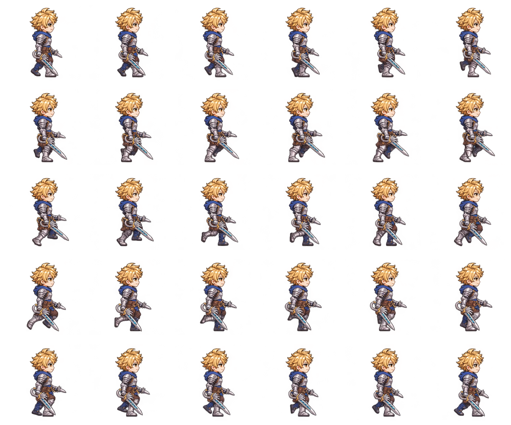

<!doctype html>
<html lang="ko">
<meta charset="utf-8">
<meta name="viewport" content="width=device-width, initial-scale=1">
<title>금발 장검·단검 · 오른쪽 걷기 30프레임</title>
<style>
  * { box-sizing: border-box; }
  body { margin: 0; padding: 24px; font-family: system-ui, sans-serif; color: #e7edf7; background: #131923; }
  main { max-width: 1000px; margin: auto; }
  h1 { font-size: 23px; margin: 0 0 8px; }
  p { line-height: 1.6; color: #afbdd0; margin: 8px 0 18px; }
  .layout { display: flex; flex-wrap: wrap; gap: 20px; align-items: start; }
  .stage { width: min(100%, 512px); aspect-ratio: 1; display: grid; place-items: center; overflow: hidden; border-radius: 12px; position: relative; }
  .stage::after { content: ''; position: absolute; left: 12%; right: 12%; top: 91.40625%; border-top: 1px dashed #93a6bf66; pointer-events: none; }
  .checker { background-color: #eff2f6; background-image: linear-gradient(45deg,#dce2ea 25%,transparent 25%),linear-gradient(-45deg,#dce2ea 25%,transparent 25%),linear-gradient(45deg,transparent 75%,#dce2ea 75%),linear-gradient(-45deg,transparent 75%,#dce2ea 75%); background-size: 24px 24px; background-position: 0 0,0 12px,12px -12px,-12px 0; }
  .light { background: #f1f3f7; } .dark { background: #212733; }
  canvas { width: 100%; height: 100%; image-rendering: pixelated; }
  .controls { flex: 1; min-width: 220px; display: grid; gap: 14px; }
  .buttons { display: flex; gap: 8px; flex-wrap: wrap; }
  button,select,a { font: inherit; color: #e7edf7; background: #253147; border: 1px solid #475773; border-radius: 8px; padding: 10px 14px; min-height: 48px; cursor: pointer; }
  button[aria-pressed="true"] { color: #131923; background: #a4cafb; border-color: #a4cafb; }
  a { display: inline-flex; align-items: center; text-decoration: none; }
  input { width: 100%; min-height: 48px; accent-color: #a4cafb; }
  output { font-size: 23px; font-variant-numeric: tabular-nums; }
  label { display: grid; gap: 5px; }
  details { margin-top: 24px; }
  summary { cursor: pointer; padding: 12px 0; min-height: 48px; }
  .atlas { width: 100%; display: block; image-rendering: pixelated; }
  .sheet-wrap { position: relative; }
  .order-grid { position: absolute; inset: 0; display: grid; grid-template-columns: repeat(6, 1fr); grid-template-rows: repeat(5, 1fr); pointer-events: none; }
  .order-cell { border: 1px solid #8191a855; padding: 5px; }
  .order-number { display: inline-block; background: #172235; color: #fff; padding: 3px 6px; border-radius: 4px; font-weight: 700; font-size: 14px; }
  .error { color: #ffb3aa; }
  @media(max-width: 600px) { body { padding: 16px; } .stage { width: 100%; } h1 { font-size: 20px; } }
</style>
<main>
  <h1>금발 장검·단검 · 오른쪽 걷기</h1>
  <p>30개의 연속 프레임 · 기본 30fps / 1초 반복 · 6열 × 5행 · 프레임당 256 × 256px</p>
  <div class="layout">
    <div class="stage checker" id="stage"><canvas id="sprite" width="256" height="256" aria-label="오른쪽 걷기 애니메이션"></canvas></div>
    <div class="controls">
      <output id="counter">01 / 30</output>
      <div class="buttons"><button id="play" type="button">일시 정지</button><button id="previous" type="button" aria-label="이전 프레임">이전</button><button id="next" type="button" aria-label="다음 프레임">다음</button></div>
      <label>프레임<input id="frame" type="range" min="0" max="29" value="0" step="1"></label>
      <label>재생 속도<select id="fps"><option value="30">30fps · 1초</option><option value="15">15fps · 2초</option><option value="10">10fps · 3초</option><option value="5">5fps · 6초</option></select></label>
      <div class="buttons" aria-label="배경 선택"><button type="button" data-background="checker" aria-pressed="true">투명 격자</button><button type="button" data-background="light" aria-pressed="false">밝게</button><button type="button" data-background="dark" aria-pressed="false">어둡게</button></div>
      <div class="buttons"><a href="walk-right-30f.png" download>PNG 시트</a><a href="walk-right-animated.png" download>움직이는 PNG</a><a href="walk-right-30f.json" download>프레임 JSON</a></div>
      <p id="status">이미지 불러오는 중…</p>
    </div>
  </div>
  <details><summary>전체 시트와 순서 보기 · 01→30, 30 다음은 01</summary><div class="checker sheet-wrap"><div class="order-grid" id="order-grid"></div></div></details>
</main>
<script>
  const CELL = 256, COUNT = 30, COLUMNS = 6;
  document.getElementById('order-grid').innerHTML = Array.from({length:COUNT}, (_, i) => `<div class="order-cell"><span class="order-number">${String(i+1).padStart(2,'0')}</span></div>`).join('');
  const image = new Image();
  const canvas = document.getElementById('sprite'), context = canvas.getContext('2d');
  const slider = document.getElementById('frame'), counter = document.getElementById('counter'), playButton = document.getElementById('play');
  let current = 0, fps = 30, playing = true, ready = false, startTime = null, startFrame = 0;
  function render() {
    if (!ready) return;
    context.clearRect(0, 0, 256, 256);
    context.imageSmoothingEnabled = false;
    context.drawImage(image, current % COLUMNS * CELL, Math.floor(current / COLUMNS) * CELL, CELL, CELL, 0, 0, 256, 256);
    slider.value = String(current);
    counter.value = `${String(current + 1).padStart(2, '0')} / 30`;
    canvas.dataset.frame = String(current);
  }
  function setPlaying(value) { playing = value; startFrame = current; startTime = null; playButton.textContent = playing ? '일시 정지' : '재생'; }
  function selectFrame(value) { current = (Number(value) + COUNT) % COUNT; setPlaying(false); render(); }
  function tick(timestamp) {
    if (ready && playing) {
      if (startTime === null) { startTime = timestamp; startFrame = current; }
      const next = (startFrame + Math.floor((timestamp - startTime) * fps / 1000 + 1e-8)) % COUNT;
      if (next !== current) { current = next; render(); }
    }
    requestAnimationFrame(tick);
  }
  playButton.onclick = () => setPlaying(!playing);
  slider.oninput = () => selectFrame(slider.value);
  document.getElementById('previous').onclick = () => selectFrame(current - 1);
  document.getElementById('next').onclick = () => selectFrame(current + 1);
  document.getElementById('fps').onchange = event => { fps = Number(event.target.value); startFrame = current; startTime = null; };
  document.querySelectorAll('[data-background]').forEach(button => button.onclick = () => {
    document.getElementById('stage').className = `stage ${button.dataset.background}`;
    document.querySelectorAll('[data-background]').forEach(item => item.setAttribute('aria-pressed', String(item === button)));
  });
  image.onload = () => { ready = true; render(); document.getElementById('status').textContent = '실제 알파 PNG · 기본 2배 확대 표시. 슬라이더로 모든 프레임을 확인할 수 있습니다.'; document.documentElement.dataset.ready = 'true'; };
  image.onerror = () => { document.getElementById('status').textContent = 'PNG 시트 파일을 불러오지 못했습니다. 시트와 미리보기를 같은 폴더에 두세요.'; document.getElementById('status').className = 'error'; };
  image.src = 'walk-right-30f.png';
  requestAnimationFrame(tick);
  window.spritePreview = { selectFrame, setPlaying, tick, render, get current() { return current; }, get playing() { return playing; } };
</script>
</html>
